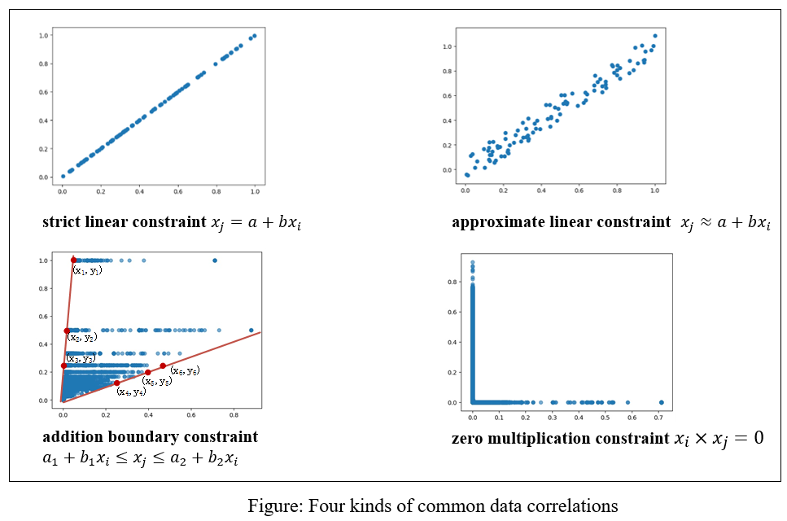

I am a first-year graduate student at Beijing Jiaotong University, advised by Prof. Wenjia Niu in Department of Information Security, School of Computer Science and Information Technology.
I obtained my bachelor degree at Beijing Information Science & Technology University in 2020. And, I fortunately have been visiting Tsinghua University (co-advised by Prof. Juanzi Li and Dr. Peng Zhang) from Nov, 2018 to June, 2020. During my time at Tsinghua, I completed my undergraduate thesis "Research on News Entity Open Relation Extraction", awarded Excellent Undergraduate Thesis of Beijing City.
My research interests lie in AI security including adversarial attack and robust learning for deep neural network, graph neural network and reinforcement learning. Here is my CV .
Email: tianyunzhe {at} bjtu [dot] edu [dot] cn

Network data such as socialnet, becomes an important component in real life, drawing a lot of study issues of security and safety. Recently, adversarial attacks on GNN (Graph Neural Network) are exposed. By generating unnoticeable adversarial perturbations targeting the node's features and the graph structure, the performance of GNN is greatly dropped on graph-related tasks such as node classification, link prediction and community detection.
Existing automatic attack methods are developed for per-node attacks, which can only be utilized for multi-node attacks in a sequential way. However, due to the overlook of perturbation influence between different per-node attacks, existing sequential method does not guarantee a global attack success rate for all target nodes, under a fixed budget of perturbation. Motivated by this, we propose a parallel adversarial attack framework on node classification (Tian et al, SCN'21). Firstly, based on FGA and NETTACK, we redesign new loss function and objective function aimed at multi-target parallel adversarial attack, and propose node filtering-based P-FGA and P-NETTACK. Then, through constructing intersection and supplement mechanisms of perturbations, we integrate P-FGA and P-NETTACK in a unified framework, finally realizing effective parallel adversarial attacks.

Due to the gap between lab simulation and real world, robust reinforcement learning has been a challenging problem. Existing efforts approached this problem through performing random environmental perturbation in learning process. However, one cannot guarantee perturbation is positive. Bad ones might bright failures to reinforcement learning.
In our recent work, we treat robust reinforcement learning as a multi-task reinforcement learning problem, and propose a curricular robust reinforcement learning approach (Tian et al, AutoSec'21). We first present a GAN-based task generation model to iteratively output new tasks at the appropriate level of difficulty for the current policy. Further, with these progressive tasks, we can realize curricular learning and finally get a robust policy.
Demo we implemented in unmanned CarRacing game validates the effectiveness. And we also demonstrate our method in multiple environments of OpenAI toolkits with MuJoCo physics simulator, such as Hopper, HalfCheetah and InvertedPendulum.

Adversarial example, an input that is modified slightly to cause a machine learning system to produce erroneous outputs, has seen significant studies recently.
Unfortunately, the fine data perturbation of adversarial examples ignores to keep potential data correlations between feature pairs. Thus, such adversarial examples will be easily filtered by configuring data correlations as basic filtering rules.
We propose an advanced robust adversarial example generation attack, avoiding not to be filtered as well as causing false classification (Tian et al, ICPADS'20). We first define four basic data correlations called strict linear constraint, approximate linear constraint, addition boundary constraint and zero multiplication constraint. Then, based on embedding multiple data correlations into one constraint matrix from the Pearson analysis, our approach can enable a Hadamard product of the constraint matrix and the sign of gradient matrix to craft perturbations, keeping consistent data correlations. Experimental results on intrusion detection system demonstrate the superiority of our constraint-based adversarial example generation, especially in terms of keeping data constraints.
Yunzhe Tian, Yike Li, Yingxiao Xiang, Wenjia Niu, Endong Tong, and Jiqiang Liu. Curricular Reinforcement Learning for Robust Policy in Unmanned CarRacing Game. In NDSS 2021, Workshop on Automotive and Autonomous Vehicle Security (AutoSec).
Yunzhe Tian, Jiqiang Liu, Endong Tong, Wenjia Niu, Liang Chang, Qi Alfred Chen, Gang Li, and Wei Wang. Towards Revealing Parallel Adversarial Attack on Politician Socialnet of Graph Structure. In Security and Communication Networks (SCN), 2021 .
Endong Tong, Wenjia Niu, Yunzhe Tian, Jiqiang Liu, Thar Baker, Sandeep Verma, and Zheli Liu. A Hierarchical Energy-efficient Service Selection Approach with Qos Constraints for Internet of Things. In IEEE Transactions on Green Communications and Networking (TGCN), 2021.
Yike Li, Yunzhe Tian, Endong Tong, Wenjia Niu, Yingxiao Xiang, Tong Chen, Yalun Wu and Jiqiang Liu. Curricular Robust Reinforcement Learning via GAN-based Perturbation through Continuously-scheduled Task Sequence. In The 14th Chinese Conference on Trusted Computing and Information Security (CTCIS 2021), 2021.
Yalun Wu, Minglu Song, Yike Li, Yunzhe Tian, Endong Tong, Wenjia Niu, Bowei Jia, Haixiang Huang, Qiong Li and Jiqiang Liu. Improving Convolutional Neural Network-based Webshell Detection through Reinforcement Learning. In The 23rd International Conference on Information and Communications Security (ICICS 2021), 2021.
Tong Chen, Yingxiao Xiang, Yike Li, Yunzhe Tian, Endong Tong, Wenjia Niu, Jiqiang Liu, Li Gang and Qi Alfred Chen. Protecting Reward Function of Reinforcement Learning via Minimal and Non-catastrophic Adversarial Trajectory. In The 40th International Symposium on Reliable Distributed Systems (SRDS 2021), 2021.
王硕汝, 牛温佳, 童恩栋, 陈彤, 李赫, 田蕴哲, 刘吉强, 韩臻, 李浥东. 强化学习离线策略评估研究综述. 计算机学报, 2021.
Xinyu Huang, Yunzhe Tian, Yifei He, Endong Tong, Wenjia Niu, Chenyang Li, Jiqiang Liu, and Liang Chang. Exposing Spoofing Attack on Flocking-based Unmanned Aerial Vehicle Cluster: A Threat to Swarm Intelligence. In Security and Communication Networks (SCN), 2020.
Bowei Jia, Yunzhe Tian, Di Zhao, Xiaojin Wang, Chenyang Li, Wenjia Niu, Endong Tong, and Jiqiang Liu. Bidirectional Rnn-based Few-shot Training for Detecting Multi-stage Attack. In The 16th International Conference on Information Security and Cryptology (INSCRYPT 2020), 2020 .
Yunzhe Tian, Yingdi Wang, Endong Tong, Wenjia Niu, Liang Chang, Qi Alfred Chen, Gang Li, and Jiqiang Liu. Exploring Data Correlation between Feature Pairs for Generating Constraint-based Adversarial Examples. In IEEE 26th International Conference on Parallel and Distributed Systems (ICPADS 2020), 2020.
Qinghua Wen, Yunzhe Tian, Xiaohui Zhang, Ruoyun Hu, Jinsong Wang, Lei Hou, and Juanzi Li. Type-aware Open Information Extraction via Graph Augmentation Model. In China Conference on Knowledge Graph and Semantic Computing (CCKS 2020), 2020 .
Oral Presentation in AutoSec Workshop @ NDSS’21 (remote presentation)
Oral Presentation in Inscrypt 2020, Guangzhou, China
Oral Presentation in ICPADS 2020, Hong Kong, China (remote presentation)
2020, Excellent Undergraduate of Beijing City
2020, Excellent Undergraduate Thesis of Beijing City
2020, Excellent Undergraduate of Beijing Information Science & Technology University
2020, Excellent Undergraduate Thesis of Beijing Information Science & Technology University
2019, National Scholarship of China
2019, President Scholarship of Beijing Information Science & Technology University